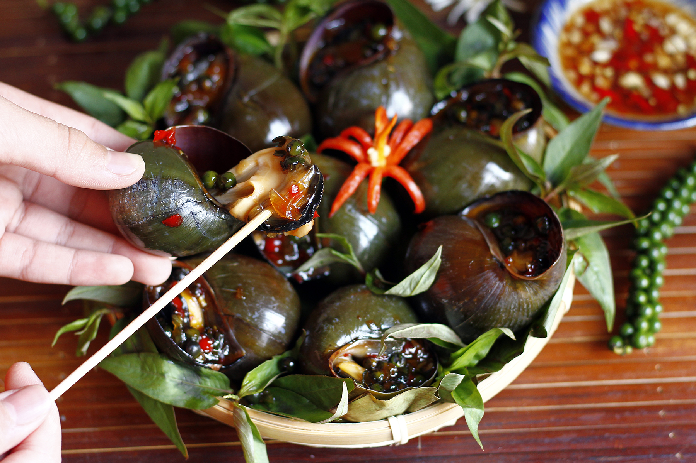

: 21/3/2023
Đất Cần Thơ vốn nổi danh bởi nhiều món ăn dân dã nhưng hương vị vô cùng đậm đà như Ba khía rang me Cần Thơ, Bánh hỏi heo quay Phong Điền hay Bún tôm khô Cái Răng và đương nhiên không thể không nhắc đến món ốc bươu nướng. Nếu có dịp du lịch Cần Thơ, bạn hãy một lần thử ăn món Ốc bươu nướng tiêu xanh Cần Thơ. Đây là một trong số những món ăn nổi tiếng và phổ biến với người dân xứ Tây Đô.

Ốc bươu nướng tiêu xanh Cần Thơ là món ngon không thể thiếu trên các bàn nhậu tại Cần Thơ. Ốc hấp chín thơm lừng, ăn kèm mắm ớt chua chua cay cay, ngọt ngọt ngon khó cưỡng
Tuy là đặc sản của Cần Thơ nhưng món ăn này được tạo nên từ những nguyên liệu vô cùng đơn giản, dễ kiếm và tạo ra một món ăn vừa lạ miệng vừa dễ tiêu. Ốc tươi sau khi bắt về sẽ được làm sạch, ngâm với ớt và nước vo gạo để làm mất vị bùn đất. Sau đó ốc sẽ được đem đi rửa nước sạch nhiều lần. Để món Ốc bươu nướng tiêu xanh Cần Thơ được ngon hơn, người chế biến thường đem ốc đi luộc trước sau đó mới nướng ốc trên bếp than củi. Mục đích của việc nướng ốc là nhằm tăng độ ngọt, thơm tự nhiên của món ăn này. Sau khi ốc đã chín, bạn tiếp tục đến công đoạn pha gia vị rưới lên ốc. Nguyên liệu cần có bao gồm tiêu, tỏi, bột ngọt… nướng đến khi ốc sôi nước, có hơi bay lên là đã chín.
Những đĩa Ốc bươu nướng tiêu xanh Cần Thơ được bày biện vô cùng đẹp mắt. Chỉ mới nhìn qua thôi là đã muốn thưởng thức rồi đúng không nào?

Tiêu xanh là thành phần không thể thiếu của món ốc này. Tiêu cay nồng giúp khử đi mùi tanh, vị bùn trong ốc. Từ đó tạo nên một món ốc thơm, ngon
Món Ốc bươu nướng tiêu xanh Cần Thơ có ngon hay không còn phụ thuộc rất nhiều vào nước mắm khi nướng. Nước mắm này phải có đủ vị cay, chua, mặn và ngọt. Ốc nướng sẽ ngon hơn nếu bạn ăn kèm chúng cùng với rau răm. Ngoài ra, bạn cũng có thể nướng ốc tươi để thưởng thức vị ốc tự nhiên, thịt ốc giòn ngọt mà không cần phải chờ đợi lâu.

Ốc phải ăn kèm với lá rau răm, chấm cùng mắm cay thì mới làm dậy được hương vị đặc trưng của món đặc sản này
Khi ăn Ốc bươu nướng tiêu xanh Cần Thơ, bạn cần húp cả nước gia vị bên trong ốc. Ốc càng nóng thì càng ngon. Vị cay hòa cùng vị mặn của ốc làm cho món ngon này thêm phần lạ miệng.
Address: Soc Trang
Phone: 84+865510677
Email: mekongescape83@gmail.com


Copyright by MeKong Escape - © 2023